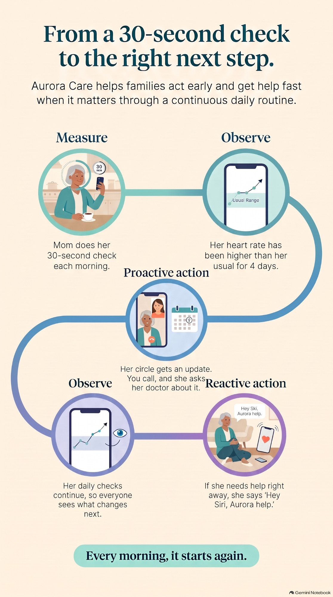

Measure
A 30-second check with the phone’s camera, each morning. No extra device.
How it works
Each day your parent takes a 30-second check on their own phone. Aurora Care compares it with their own usual and keeps their medicines, labs, and appointments in one place, so the people they chose can act early or step in fast.

The daily routine
A 30-second check with the phone’s camera, each morning. No extra device.
Each reading is compared with their own usual, so a change is easier to see.
When something trends the wrong way, the people they chose see it while there’s still time to talk it through.
If they need help right away, they can say “Hey Siri, Aurora help,” and the people they chose get an alert.
In real life
| The situation | What Aurora Care shows | A good next step |
|---|---|---|
| Mom's blood pressure has crept up all week | The trend against her usual blood pressure, and any missed medicine doses | You call with the trend in hand, book her doctor, and bring the report |
| Dad keeps forgetting his evening pills | A medicine chart with the missed days | A conversation about routine, and a pattern to raise with his doctor |
| Dad slips in the shower and can't reach his phone on the counter | He says “Hey Siri, Aurora help,” and the people he chose get an alert right away | His daughter calls him or heads over |
| Dad, who has memory concerns, walks past his usual area | An alert that his phone is outside the area the family set up together | You call to check he knows the way home |
| Your own resting heart rate creeps up after weeks of skipped workouts | Your trend against your own usual heart rate | You notice and change course, or ask your doctor |
| Coming home after a hospital stay | Daily vitals and medicines in one view for the family | Everyone sees how the first weeks are going |
Aurora Care supports earlier care awareness and follow-up. It does not replace clinicians, emergency services, or medical diagnosis.
Watch
Aurora Care supports earlier awareness and follow-up. It does not replace clinicians, emergency services, or medical diagnosis.